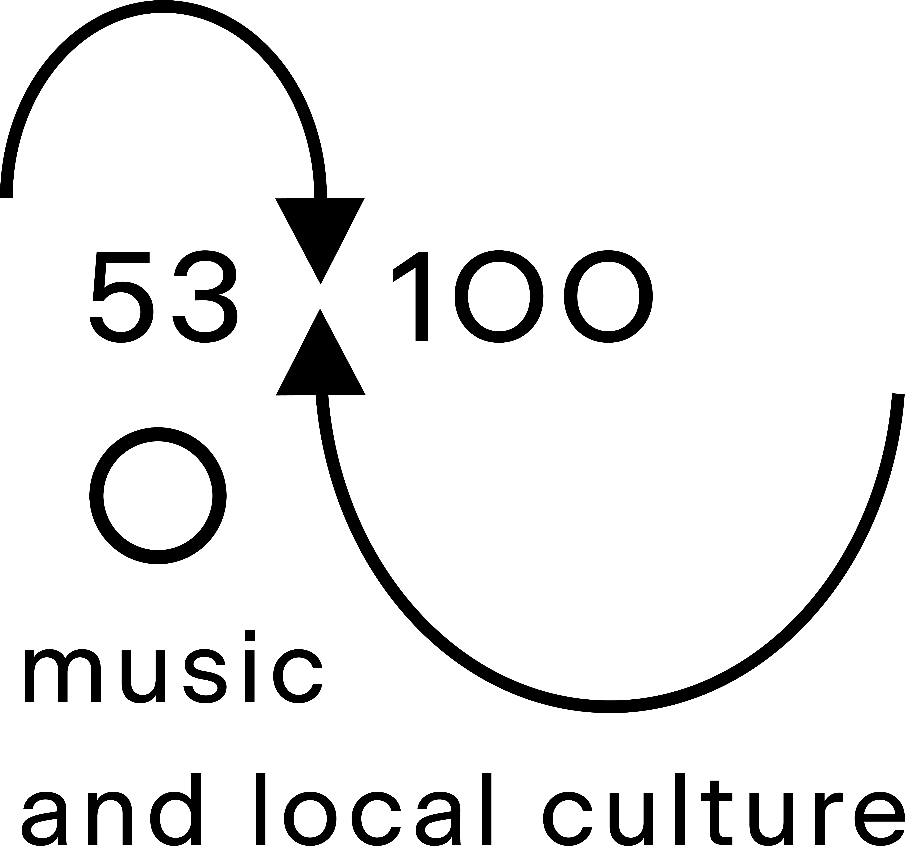
FESTIVAL
MUSIC
53100 brings a wide range of internationally respected artists
to a place where the boundary-pushing fringes of electronic music are rarely represented.
The Chianti area is known as a landmark for Tuscan gastronomy and wine tourism,
however electronic music events have always been a rare occasion. Our lineup covers
a broad musical spectrum, charting a winding course between ambient,
mutant bass and breaks, otherworldly frequencies and plenty more besides.
LINE-UP
- Camille Maria [IT - 53100] 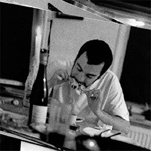
- Emanuele Giannini [IT - Important Records / Experiential Recordings] (live) 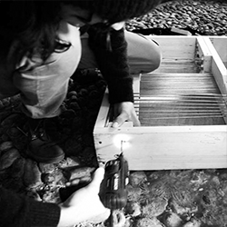
- Eraldo Bernocchi [IT - SubRosa / Apollo] (live) 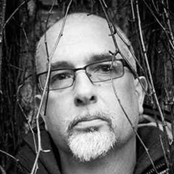
- Grand River [NL - Spazio Disponibile]
- Itinerant Dub [Itinerant Dub] 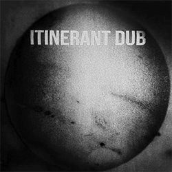
- Jessica Ekomane [FR - Important Records] (live) 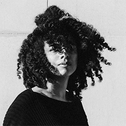
- Mark [AU - unterton / A Colorful Storm] 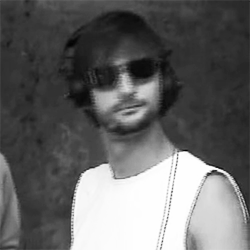
- Nosedrip [BE - Stroom]
- Ossia [UK - Young Echo / Berceuse Heroique] 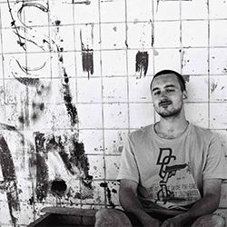
- Robert Bergman [NL - Brew / The Trilogy Tapes] 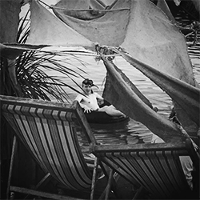
- Purita D. [NL - Killekill] 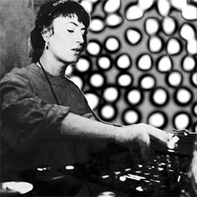
- Shannen SP [UK - Hyperdub / NTS] 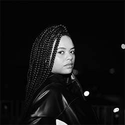
- Vlada [RU - Arma17] 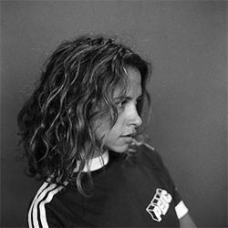
- + more TBA

LOCAL CULTURE
53100 provides the opportunity for you
to fully immerse yourself in the beautiful natural landscape
of our region: forests of oak and chestnut, undulating hills,
olive trees and sun-kissed vineyards that stretch towards the horizon.
All the while, you will enjoy a carefully crafted menu of Tuscany’s
renowned food and wine, informed by the unique geography
of our land and the produce of the season.
-
MUSIC: OPEN & CLOSE
FRIDAY:Berlin’s experimental station, Cashmere Radio, will take over the programming of 53100. During the 8-hours live stream, broadcasted online and on 88.4 FM in Berlin, the radio will host talks, live performances and round-table discussions. The Friday programme is reserved for Selvole on-site residents.
SATURDAY:53100 opens its doors at midday with performances on the Day Stage until 12AM. The Night Stage opens at midnight and carries through to 4AM. Expect more dancefloor-oriented programming on the Saturday.
SUNDAY:53100 softly takes off at midday, with performances on the Live and Day Stage until midnight. The Night Stage then continues until 4AM. Lights on, 53100 is over. The Sunday programme takes a more eclectic turn with transmissions from the weirder fringes of electronic music.
-
TRAVEL
REACHING SIENA:
The festival location, Castello di Selvole, is located in the Chianti area, between Siena and Florence.
BY AIR:
Florence (90km)
then a 1h train to Siena station or a 50 min bus
Pisa (125km)
then a 1.5h train to Siena station
Bologna (175km)
then a 2h train to Siena station
Perugia (120km)
then a 1.2h Flixbus to Siena station
BY BUS:
You can easily reach Siena by bus from all major airports and cities in the country. Busradar.it provides all the necessary informations for bus travellers.
-
ACCOMODATION
CAMPING:
The Castello di Selvole is located on top of a hill and is surrounded by vineyards and forests. For this reason, there’s no level ground for a camp site that is big enough for all of our guests. Worry not - we’ve teamed up with the Camping Colleverde, a beautiful green oasis located a short drive from the festival site and 900m from Siena’s city center. We’ll provide a free 20 min shuttle service between the camp site and the festival for the whole duration of the festival.
The camping offers a variety of accommodation options for guests. This could be a 2 person tent, a mobile home for 4 or 5 people or a garden where you can pitch your tent under the shade of a tree. There will be an area at the camping site that is specifically reserved for the guests of 53100. You can book your camping best by visiting the website or by emailing Lene at: info@sienacamping.com
When reaching out to Camping Colleverde, don't forget to mention you're a guest of 53100 for a 10% price reduction.
ON SITE:
The Castello di Selvole specialises in agritourism with 20 apartments available for our guests. These apartments can accommodate groups of either 4 or 6 people. By renting an apartment, you’ll have the convenience of waking up on the festival site, surrounded by a captivating view of the vineyards. -
DRUGS & ALCOHOL
If caught in possession of drugs you will be asked to leave the festival site. Alcohol cannot be brought onto the festival site. This is a condition of our license. Any alcohol brought into the Castello di Selvole will be confiscated by the venue's security. The bar is our main source of income, so please support the work of the organisation by buying your drinks at the bar. We’ve done our very best to make it reasonably priced.
-
CATERING
The festival will be a chance to experience local Tuscan cuisine. We will cater to all dietary requirements. There will also be drinking water.
-
CASH
There are no cash machines on site. Please withdraw cash before you arrive.
-
ACCESS
We want to make our festival accessible and inclusive to all. If you have any special requirements please email info@53100.org and we will do our best to make your time at the festival as straightforward and enjoyable as possible.
-
MEMBERSHIP INFO
53100 is organised by S.O.W. ETS, a cultural association based in Siena, Italy. To gain access to the festival you will need to purchase a year-long membership to S.O.W. ETS. We are selling memberships instead of tickets to the festival and they can be purchased through our Resident Advisor event page. If you wish to read through the association’s statute, you can do so here.
-
CONTACTS
if you have any questions, ideas, or want to contribute to 53100 in any way, we’re happy to hear from you.
Get in touch at info@53100.org
VENUE: CASTELLO DI SELVOLE
ADDRESS
Localita' Selvole, 53019 Castelnuovo Berardenga SI
COORDINATES
43.403455, 11.3787347
Localita' Selvole, 53019 Castelnuovo Berardenga SI
COORDINATES
43.403455, 11.3787347
REACHING THE CASTELLO DI SELVOLE:
BY SHUTTLE:
The free shuttle will provide a round trip between various points in Siena and the festival site. The shuttle service will be provided during the festival opening hours. More info on shuttle stops and times to follow.
BY PUBLIC TRANSPORT:
There’s a bus from Siena Station to Castello di Selvole (stop St.Pianella Op.Selvole). See route here. The bus stop is a 5 min walk from the festival site.
BY TAXI:
This costs about €20 / €25 one way. You can book by calling: +39 057749222
BY CAR:
Parking is strictly forbidden in the immediate area of the festival site. You can park your car in a designated area and we will provide a free 15 min shuttle service from here to the festival site. More info to follow.
BY SHUTTLE:
The free shuttle will provide a round trip between various points in Siena and the festival site. The shuttle service will be provided during the festival opening hours. More info on shuttle stops and times to follow.
BY PUBLIC TRANSPORT:
There’s a bus from Siena Station to Castello di Selvole (stop St.Pianella Op.Selvole). See route here. The bus stop is a 5 min walk from the festival site.
BY TAXI:
This costs about €20 / €25 one way. You can book by calling: +39 057749222
BY CAR:
Parking is strictly forbidden in the immediate area of the festival site. You can park your car in a designated area and we will provide a free 15 min shuttle service from here to the festival site. More info to follow.
Additionally, Selvole’s guests will be able to attend the Friday evening festival programme,
hosted in collaboration with Berlin based experimental station, Cashmere Radio.
An all-inclusive Tuscan dinner is also included in the price of this accommodation.
If you wish to enquire about on-site apartments, please get in touch: accommodation@53100.org
VENUE: CASTELLO DI SELVOLE
ADDRESS
Localita' Selvole, 53019 Castelnuovo Berardenga SI
COORDINATES
43.403455, 11.3787347
Localita' Selvole, 53019 Castelnuovo Berardenga SI
COORDINATES
43.403455, 11.3787347
MUSIC: OPEN & CLOSE
FRIDAY:
Berlin’s experimental station, Cashmere Radio, will take over the programming of 53100.
During the 8-hours live stream, broadcasted online and on 88.4 FM in Berlin,
the radio will host talks, live performances and round-table discussions.
The Friday programme is reserved for Selvole on-site residents. SATURDAY:
53100 opens its doors at midday with performances on the Day Stage until 12AM.
The Night Stage opens at midnight and carries through to 4AM.
Expect more dancefloor-oriented programming on the Saturday. SUNDAY:
53100 softly takes off at midday, with performances on the Live and Day Stage until midnight.
The Night Stage then continues until 4AM. Lights on, 53100 is over.
The Sunday programme takes a more eclectic turn with transmissions
from the weirder fringes of electronic music.
-
TRAVEL
REACHING SIENA:
The festival location, Castello di Selvole, is located in the Chianti area, between Siena and Florence.
BY AIR:
Florence (90km) - then a 1h train to Siena station or a 50 min bus
Pisa (125km) - then a 1.5h train to Siena station
Bologna (175km) - then a 2h train to Siena station
Perugia (120km) - then a 1.2h Flixbus to Siena station
BY BUS:
You can easily reach Siena by bus from all major airports and cities in the country. Busradar.it provides all the necessary informations for bus travellers.
REACHING THE CASTELLO DI SELVOLE:
BY SHUTTLE:
The free shuttle will provide a round trip between various points in Siena and the festival site. The shuttle service will be provided during the festival opening hours. More info on shuttle stops and times to follow.
BY PUBLIC TRANSPORT:
There’s a bus from Siena Station to Castello di Selvole (stop St.Pianella Op.Selvole). See route here. The bus stop is a 5 min walk from the festival site.
BY TAXI:
This costs about €20 / €25 one way. You can book by calling: +39 057749222
BY CAR:
Parking is strictly forbidden in the immediate area of the festival site. You can park your car in a designated area and we will provide a free 15 min shuttle service from here to the festival site. More info to follow.
-
ACCOMODATION
CAMPING:
The Castello di Selvole is located on top of a hill and is surrounded by vineyards and forests. For this reason, there’s no level ground for a camp site that is big enough for all of our guests. Worry not - we’ve teamed up with the Camping Colleverde, a beautiful green oasis located a short drive from the festival site and 900m from Siena’s city center. We’ll provide a free 20 min shuttle service between the camp site and the festival for the whole duration of the festival.
The camping offers a variety of accommodation options for guests. This could be a 2 person tent, a mobile home for 4 or 5 people or a garden where you can pitch your tent under the shade of a tree.
There will be an area at the camping site that is specifically reserved for the guests of 53100. You can book your camping best by visiting the website or by emailing Lene at: info@sienacamping.com
When reaching out to Camping Colleverde, don't forget to mention you're a guest of 53100 for a 10% price reduction.
ON SITE:
The Castello di Selvole specialises in agritourism with 20 apartments available for our guests. These apartments can accommodate groups of either 4 or 6 people. By renting an apartment, you’ll have the convenience of waking up on the festival site, surrounded by a captivating view of the vineyards. Additionally, Selvole’s guests will be able to attend the Friday evening festival programme, hosted in collaboration with Berlin based experimental station, Cashmere Radio. An all-inclusive Tuscan dinner is also included in the price of this accommodation. If you wish to enquire about on-site apartments, please get in touch: accommodation@53100.org -
DRUGS & ALCOHOL
If caught in possession of drugs you will be asked to leave the festival site. Alcohol cannot be brought onto the festival site. This is a condition of our license. Any alcohol brought into the Castello di Selvole will be confiscated by the venue's security. The bar is our main source of income, so please support the work of the organisation by buying your drinks at the bar. We’ve done our very best to make it reasonably priced.
-
CATERING
The festival will be a chance to experience local Tuscan cuisine. We will cater to all dietary requirements. There will also be drinking water.
-
CASH
There are no cash machines on site. Please withdraw cash before you arrive.
-
ACCESS
We want to make our festival accessible and inclusive to all. If you have any special requirements please email info@53100.org and we will do our best to make your time at the festival as straightforward and enjoyable as possible.
-
MEMBERSHIP INFO
53100 is organised by S.O.W. ETS, a cultural association based in Siena, Italy. To gain access to the festival you will need to purchase a year-long membership to S.O.W. ETS. We are selling memberships instead of tickets to the festival and they can be purchased through our Resident Advisor event page. If you wish to read through the association’s statute, you can do so here.
-
CONTACTS
if you have any questions, ideas, or want to contribute to 53100 in any way, we’re happy to hear from you.
Get in touch at info@53100.org